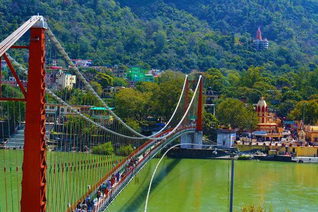
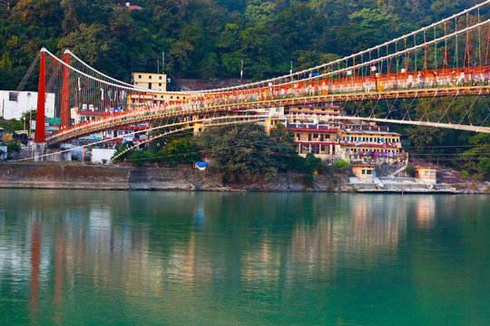
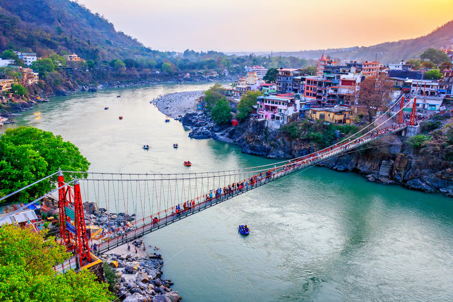
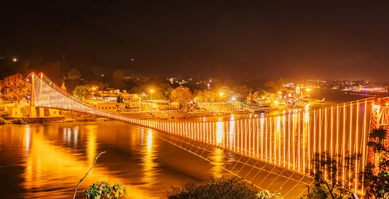
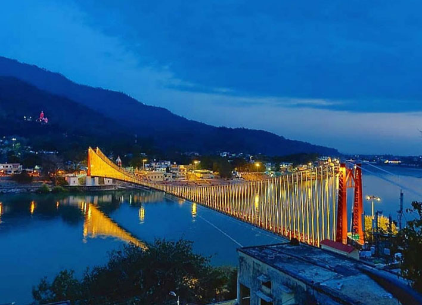

Ram Jhula is one of the most iconic and photographed landmarks in Rishikesh, a beautiful iron suspension bridge built in 1986 over the holy Ganga River. Located upstream from Lakshman Jhula (Janki Bridge), it connects the Tapovan and Swarg Ashram sides of the town, offering breathtaking views of the fast-flowing river, surrounding hills, ashrams, temples, and colorful prayer flags fluttering in the breeze. Named after Lord Rama (who is believed to have crossed the Ganga in this area), the bridge carries deep spiritual significance and a timeless charm.
Walking across Ram Jhula feels like stepping into a postcard of spiritual India — the gentle sway of the bridge, the sound of the Ganga below, the sight of sadhus meditating, and the energy of yogis, travelers, and devotees from around the world. Nearby are famous spots like Shivanand Ashram, Gita Bhawan, and several yoga centers, making this area the true spiritual and cultural hub of Rishikesh. At sunrise or sunset, the golden light on the river turns the scene into pure magic.
Early morning for peaceful walks and sunrise views, or late afternoon/evening for sunset and Ganga Aarti vibes — avoid midday crowds in peak season.
Iconic suspension bridge, panoramic Ganga & Himalayan views, mythological connection to Lord Rama, nearby ashrams, temples, yoga centers, and vibrant spiritual atmosphere.
Walk slowly (bridge sways), no vehicles allowed (pedestrian only), carry camera for golden hour shots, explore nearby Gita Bhawan & Shivanand Ashram, and enjoy riverside chai.
"Ram Jhula is more than a bridge — it is a sacred passage where the Ganga flows beneath your feet and the spirit of Rishikesh whispers peace, faith, and timeless wonder."